2026년 행정사무감사 질의서 (발언용 · 5분) — 집행부 2일차
기회경기관람권, 관람권보다 운영비가 크다
— 도민에게 가는 돈 42.6%, 사업을 돌리는 돈 57.4%
문화체육관광위원회 황은화 위원 → 문화체육관광국장(체육진흥과)
| ① 운영비가 더 크다 | 2026년 5억 7,635만 원 중 입장권 2억 4,532만 원(42.6%), 인건비·일반운영비 3억 3,103만 원(57.4%) → 2차 추경에서 "구단홍보비 잔액" 1억 3,983만 원 감액 — 사업량 감소는 "해당 없음" |
| ② 실적은 넘었는데 정산은 23% | 9월 말 36,981명, 연 목표 36,080명 초과. 집행률은 체육회 23.2%, 장애인체육회 24% → 계획 단가(6,500원)로 보면 입장권 예산 98% 소진 추정 — 4분기 정산 재원 확인 필요 |
| ③ 한 구단에 쏠린 실적 | 장애인 본인 16,442명 중 파주프런티어FC 6,413명(39%), 경기당 600명대·동반 0~25명 → 안산그리너스FC는 전체 239명 — 실적 산정 방식과 단체관람 여부 확인 |
※ 의원실 메모 (발언 제외) · 같은 자료를 채명신·한규찬 위원(발간본 102번), 김승기·안시현 위원(체육회 19번·장애인체육회 23번)도 요구했다. 질의 순서와 겹치는 부분은 사전 확인이 필요하다. · 파주프런티어FC 실적은 "부정"으로 단정하지 않고 산정 방식 확인으로 묻는다. 단체관람이면 정상일 수 있다. · "98% 소진"은 계획 단가 6,500원을 그대로 곱한 의원실 추정이다. 실제 구단별 정산 단가는 다를 수 있다. |
※ 발언 중 [근거 n] 표시는 맨 뒤 「근거자료」 번호입니다.
■ 발언 — 도입
국장님, 기회경기관람권에 대해 묻겠습니다.
70세 이상 어르신과 등록 장애인, 그리고 동반 1인이 도내 프로스포츠 경기를 1,000원에 볼 수 있게 하는 사업입니다. 경기도체육회와 경기도장애인체육회가 운영하고, 관람권 값은 구단과 정산합니다. [근거 11]
취지에는 공감합니다. 수혜자도 2023년 12,564명에서 2025년 31,588명으로 늘었습니다. 그런데 예산서를 펼쳐 보면, 이 사업의 돈은 관람권보다 사업을 돌리는 데 더 많이 쓰이고 있습니다. [근거 1]
오늘은 돈의 구조, 실적과 정산의 차이, 그리고 한 구단에 쏠린 실적, 세 가지를 확인하겠습니다.
▶ 질문 1. 관람권보다 운영비가 크다
2026년 계획서를 보겠습니다. 예산 5억 7,635만 원 가운데 어르신과 장애인에게 가는 입장권 지원은 2억 4,532만 원, 42.6%입니다. 인건비와 일반운영비가 3억 3,103만 원, 57.4%입니다. [근거 1]
작년 계획서에는 "입장권 지원 예산을 1억 400만 원 늘리고 일반운영비를 1억 400만 원 줄여 내실 있게 추진하겠다"고 적었습니다. 그런데 올해 일반운영비는 여전히 2억 4,903만 원입니다. [근거 2]
2025년 결과를 보면 5억 1,677만 원을 써서 31,863명이 혜택을 봤습니다. 한 사람당 약 1만 6천 원입니다. 올해 계획도 같습니다. 예산을 목표 인원으로 나누면 한 사람당 약 1만 6천 원인데, 그중 입장권 지원은 6,500원입니다. 나머지는 사업을 돌리는 비용입니다. [근거 3] [근거 1]
그리고 지난 10월, 2회 추경에서 이 사업을 1억 4,143만 원 줄였습니다. 사유는 "구단 홍보비 잔액"입니다. 1억 3,983만 원이 남았다는 뜻입니다. 체육회는 "사업량 감소 해당 없음"이라고 답했습니다. [근거 4] [근거 5]
운영비를 줄여도 사업량이 그대로라면, 처음부터 입장권에 쓸 수 있었던 돈 아닙니까? 2027년 예산은 어떤 비율로 편성했습니까?
▷ "운영비는 매니저 인건비, 홍보, 정산 관리에 필요한 비용이다"
→ 필요한 비용이라면 왜 1억 4천만 원이 남았습니까? 체육회는 2024년·2025년 두 해 연속 인건비 2개월분을 쓰지 못했다고 적었습니다. 필요한 만큼만 편성해 주십시오. [근거 5]
▷ "구단 홍보비(옥외광고)도 참여 확대를 위한 것이다"
→ 관람권 값을 받는 구단에 홍보비를 또 주는 구조입니다. 체육회 자료에는 관람권 값을 자부담 1,000원 + 구단 50% + 도 차액으로 나눈다고 돼 있습니다. 구단이 이미 절반을 부담하는데 광고비를 따로 줄 근거가 무엇인지, 구단별 홍보비 집행 내역을 제출해 주십시오. [근거 5]
▶ 질문 2. 실적은 목표를 넘었는데, 정산은 23%
올해 9월 말까지 36,981명이 관람권을 썼습니다. 연간 목표 36,080명을 이미 넘었습니다. [근거 6] [근거 1]
그런데 집행률은 경기도체육회 23.2%, 장애인체육회 24%입니다. 구단 정산을 시즌이 끝난 뒤 한꺼번에 하기 때문입니다. [근거 5] [근거 7]
계획서의 입장권 단가 6,500원을 그대로 곱하면, 9월까지 쓴 관람권만 2억 4천만 원입니다. 입장권 예산 2억 4,532만 원의 98%입니다. 작년 4분기에는 9,602명이 더 들었습니다. 농구·배구 시즌이 이제 시작됩니다. [근거 1] [근거 3]
결산도 보겠습니다. 도 사업설명서의 결산 현황에는 2024년·2025년 집행률이 100%로 적혀 있습니다. 그러나 체육회 실제 집행률은 88.9%, 89.8%, 장애인체육회는 2024년 72%였습니다. 작년 행감에서도 "집행률 저조"를 지적했습니다. [근거 4] [근거 5] [근거 7] [근거 8]
4분기 구단 정산에 필요한 금액을 추계해 보셨습니까? 모자라면 재원은 어디서 마련합니까?
▷ "실제 정산 단가는 구단마다 달라 예산 내에서 충분하다"
→ 그렇다면 구단별 정산 단가와 9월 말 기준 정산 예정액을 내 주십시오. 근거 없이 "충분하다"고 하실 수는 없습니다. 2차 추경에서 1억 4천만 원을 줄인 것이 10월 12일입니다. 그때 4분기 소요를 따져 보셨습니까? [근거 4]
▷ "도 결산상 100%는 보조금 교부 기준이다"
→ 그래서 묻는 것입니다. 교부하면 100%로 잡히니, 현장에서 매년 10% 넘게 남는 것이 예산서에 드러나지 않습니다. 체육회·장애인체육회의 실제 집행액과 반납액을 결산 때 함께 보고해 주십시오. [근거 4] [근거 7]
▶ 질문 3. 한 구단에 쏠린 실적
구단별 실적을 보겠습니다. 올해 장애인 본인 관람 16,442명 가운데 파주프런티어FC 한 구단이 6,413명, 39%입니다. 올해 처음 참여한 구단입니다. [근거 6]
경기별로 보면 더 분명합니다. 파주프런티어FC는 13경기 중 10경기에서 경기당 518명에서 639명의 장애인이 관람했습니다. 그런데 동반 1인은 경기당 0명에서 25명입니다. 전체 평균은 경기당 53명입니다. [근거 9]
반면 제 지역구 안산그리너스FC는 올해 전체 239명, 장애인 관람은 경기당 5명 안팎입니다. [근거 6] [근거 9]
관람권은 구단이 현장에서 신분증과 장애인등록증을 확인하고 발급합니다. 수백 명이 한꺼번에 들어오는 경기에서 어떻게 확인했는지, 단체관람이라면 누가 모집했는지 자료가 없습니다. 체육회는 "경기별 현황"을 요구받고도 구단별 합계만 냈습니다. [근거 11] [근거 10]
파주프런티어FC 실적은 단체관람입니까? 실적과 정산액은 어떤 기준으로 확인했습니까?
▷ "장애인 단체관람 활성화 계획에 따른 정상적인 단체관람이다"
→ 단체관람이라면 좋은 일입니다. 다만 어느 기관·단체가 몇 명을 모집했는지, 입장 확인은 어떻게 했는지, 구단에 얼마를 정산했는지 확인해 주십시오. 다른 구단에도 같은 방식을 넓히면 됩니다. [근거 9]
▷ "구단이 제출한 실적을 기준으로 정산한다"
→ 그래서 문제입니다. 구단이 발급하고, 구단이 집계하고, 구단에 정산합니다. 체육회와 장애인체육회는 현장 확인 기준을 따로 두고 있습니까? 없다면 마련해 주십시오. [근거 11]
■ 마무리 · 요구사항
국장님, 어르신과 장애인이 1,000원으로 경기장에 가는 것, 정말 좋은 사업입니다. 그래서 돈이 관람권에 더 가야 합니다. 운영비가 남아 1억 4천만 원을 깎을 정도라면, 그 돈으로 더 많은 도민이 경기장에 갈 수 있었습니다. 실적은 현장에서 확인한 숫자여야 합니다. 꼼꼼히 챙겨 주십시오.
하나, 2025년 정산서의 인건비·일반운영비 세부 내역(구단홍보비·옥외광고·회계검증·홍보물, 체육회·장애인체육회 각각)과 구단별 정산 청구서를 2027년 본예산 상임위 심사 전까지 제출하고, 2027년 예산은 입장권 비중을 높이는 방향으로 조정안을 보고해 주십시오.
둘, 2026년 4분기 구단 정산 소요액 추계와 부족 시 재원 대책을 2026년 11월 말까지 보고해 주십시오.
셋, 파주프런티어FC 장애인 관람 실적의 산정 근거(단체관람 여부, 모집 기관, 입장 확인 방식, 정산 단가)를 점검하고, 구단 실적의 현장 확인 기준을 마련해 2026년 12월까지 보고해 주십시오.
■ 참고 · 감사 중 추가 요구자료
· 2025년 정산서(체육회·장애인체육회)의 인건비·일반운영비 통계목별 세부 내역, 구단홍보비(옥외광고) 구단별 지급 내역
· 2025·2026년 구단별 정산 청구서와 정산 단가(권종별 입장권 가격·구단 부담률·도 지원액)
· 파주프런티어FC 경기별 관람 신청·모집 기관 명단(단체명만)과 입장 확인 기록
· 체육회 기관 19번 요구분 중 미제출된 경기별 노인 관람 현황
근 거 자 료
빨간 상자·번호는 발언에서 짚는 부분입니다. "원문 재현"은 한글(hwpx) 원문을 그대로 옮겨 표시한 것이고, "의원실 산출"은 원자료로 계산한 값입니다.
▶ 질문 1 관련
근거 1. 2026년 추진계획 — 소요예산 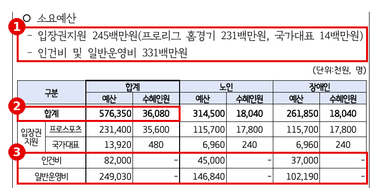
※ 출처: 문화체육관광국 행정사무감사 1차 요구자료(발간본 3권) 102번 「기회경기관람권 및 어르신 스포츠시설 이용료 지원사업 관련 자료」(체육진흥과) 35쪽 |
근거 2. 2025년 추진계획 — "운영비 줄여 입장권 늘리겠다" 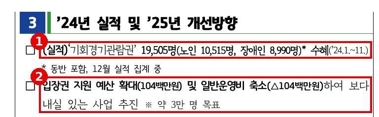
※ 출처: 문화체육관광국 행정사무감사 1차 요구자료(발간본 3권) 102번 「기회경기관람권 및 어르신 스포츠시설 이용료 지원사업 관련 자료」(체육진흥과) 32쪽 |
근거 3. 2025년 실적·예산 집행 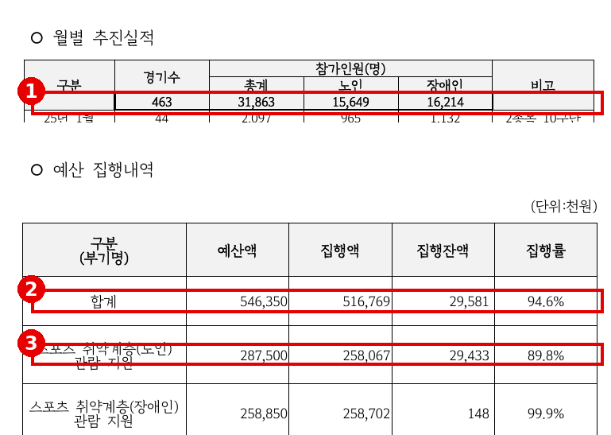
※ 출처: 문화체육관광국 행정사무감사 1차 요구자료(발간본 3권) 102번 「기회경기관람권 및 어르신 스포츠시설 이용료 지원사업 관련 자료」(체육진흥과) 37~38쪽 |
근거 4. 2026년 제2회 추경 사업설명서 — "구단홍보비 잔액" 감액, 결산 100% 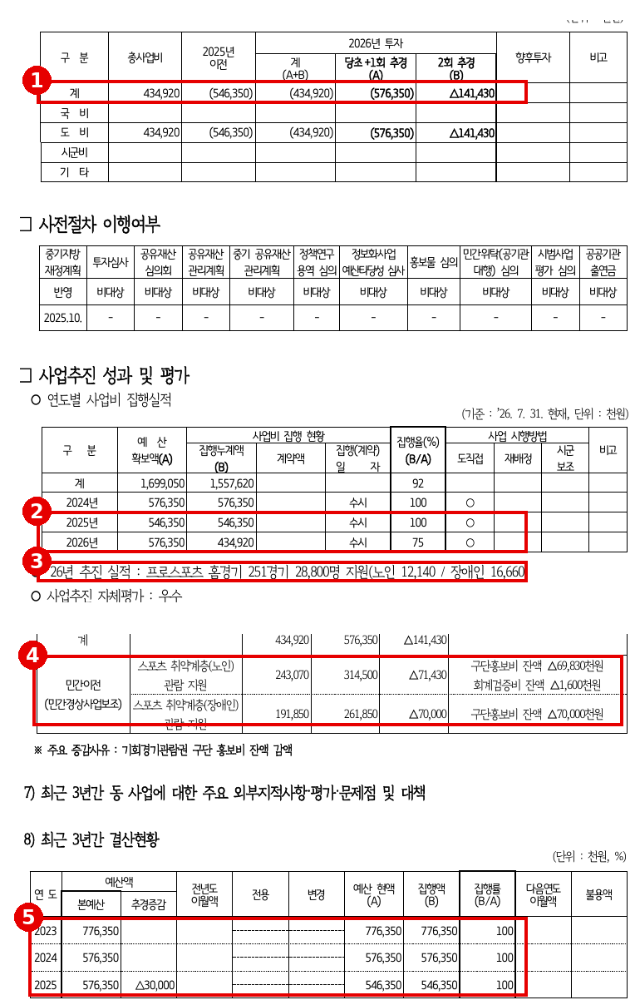
※ 출처: 2026년 제2회 경기도 추가경정예산 사업설명서(안) 「스포츠 취약계층 관람 기회 확대」 287·289쪽 |
근거 5. 경기도체육회 — 집행률·감액 사유·관람권 비용 분담 구조 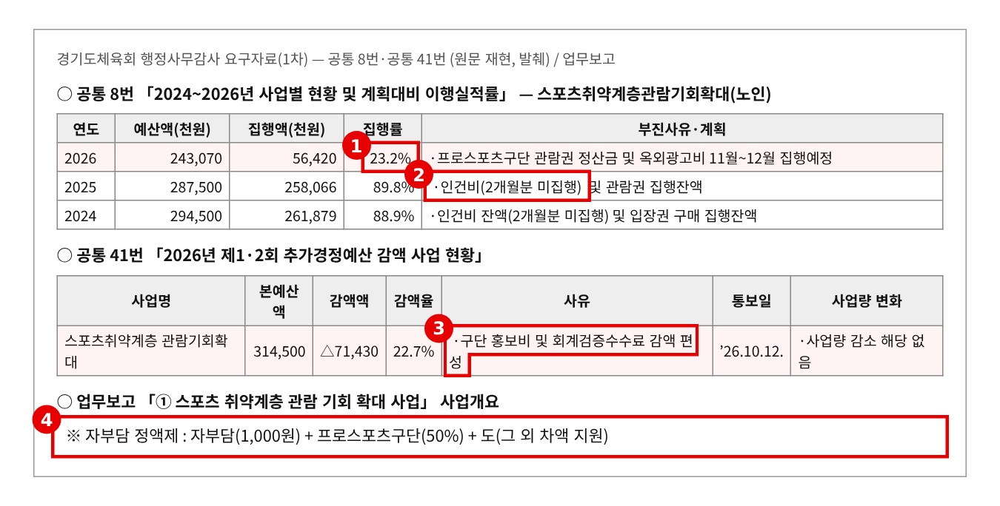
※ 출처: 경기도체육회 2026년 행정사무감사 요구자료 공통 8번·공통 41번, 업무보고 「스포츠 취약계층 관람 기회 확대 사업」 (원문 재현, 발췌) |
▶ 질문 2 관련
근거 6. 2026년 9월 말 실적 — 월별·구단별 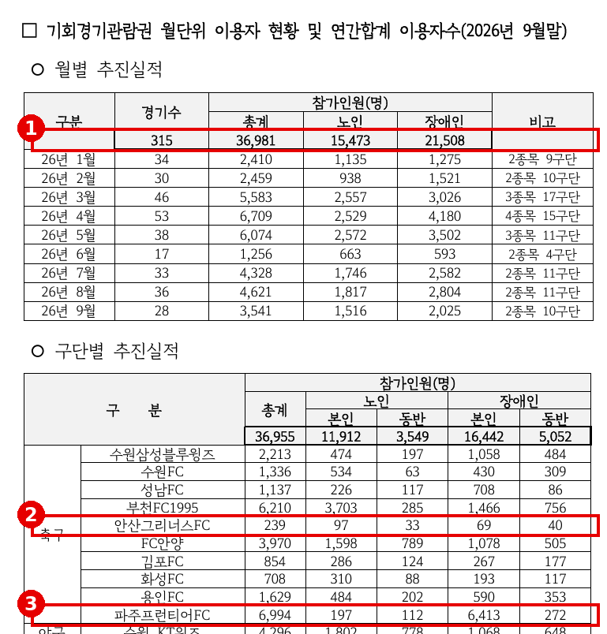
※ 출처: 문화체육관광국 행정사무감사 1차 요구자료(발간본 3권) 102번 「기회경기관람권 및 어르신 스포츠시설 이용료 지원사업 관련 자료」(체육진흥과) 39쪽 |
근거 7. 경기도장애인체육회 — 연도별 집행률·추경 감액 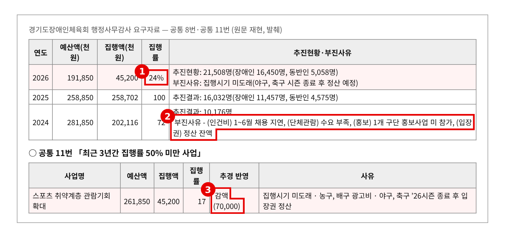
※ 출처: 경기도장애인체육회 2026년 행정사무감사 요구자료 공통 8번·공통 11번 (원문 재현, 발췌) |
근거 8. 2025년 행정사무감사 지적사항 — "집행률 저조" 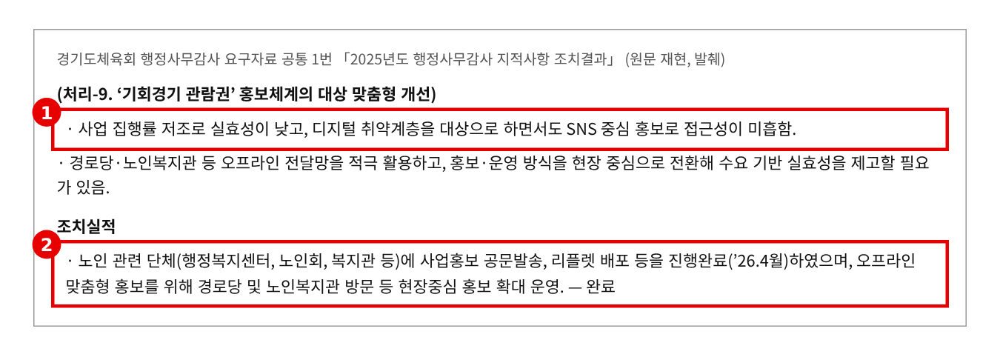
※ 출처: 경기도체육회 2026년 행정사무감사 요구자료 공통 1번 「2025년도 행정사무감사 지적사항 조치결과」 처리-9 (원문 재현, 발췌) |
▶ 질문 3 관련
근거 9. 장애인 관람 — 구단별·경기별 (파주프런티어FC·안산그리너스FC) 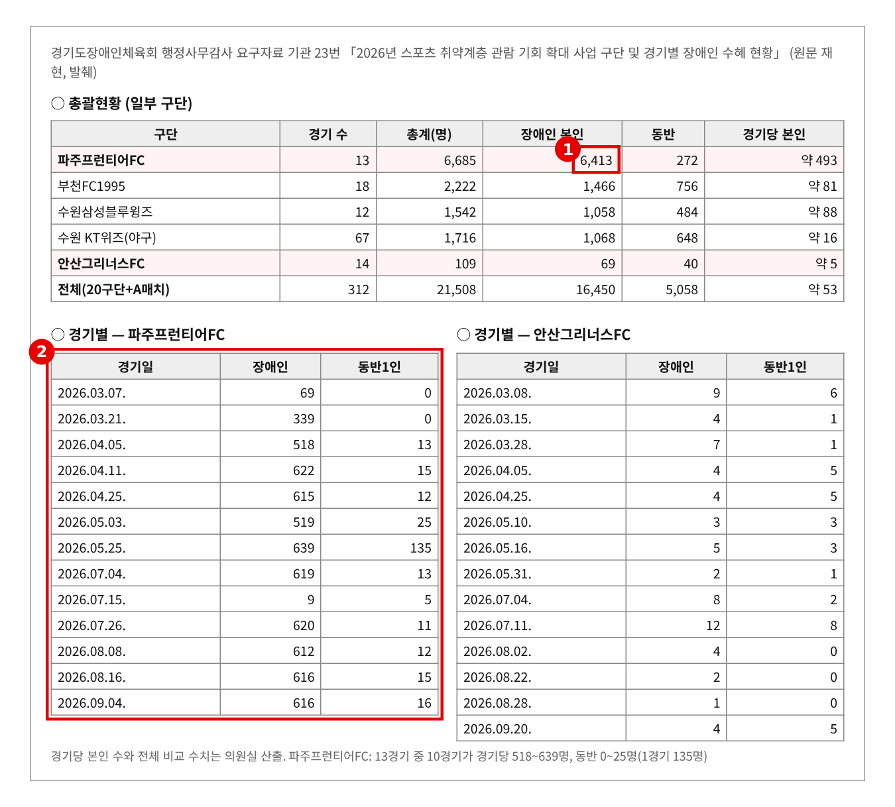
※ 출처: 경기도장애인체육회 2026년 행정사무감사 요구자료 기관 23번 「2026년 스포츠 취약계층 관람 기회 확대 사업 구단 및 경기별 장애인 수혜 현황」 (원문 재현, 발췌) |
근거 10. 경기도체육회 19번 — "경기별" 요구에 구단별 합계만 제출 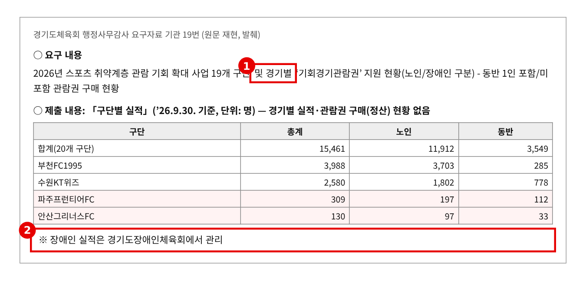
※ 출처: 경기도체육회 2026년 행정사무감사 요구자료 기관 19번 「2026년 스포츠 취약계층 관람 기회 확대 사업 … 지원 현황」 (원문 재현, 발췌) |
근거 11. 사업 비교표 — 대상자 확인과 정산 방식 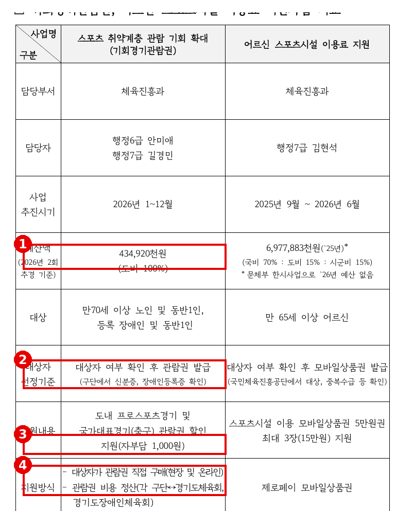
※ 출처: 문화체육관광국 행정사무감사 1차 요구자료(발간본 3권) 102번 「기회경기관람권 및 어르신 스포츠시설 이용료 지원사업 관련 자료」(체육진흥과) 30쪽 |